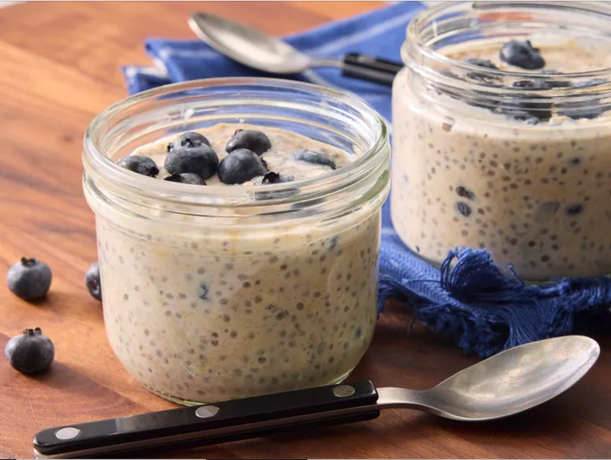

Overnight Oats
Description
In this recipe, we will take a look at the ingredients needed to make overnight oats, and the steps taken in preparation.
Ingredients:
- ⅓ cup milk
- ¼ cup Greek yogurt
- ¼ cup rolled oats
- 2 teaspoons honey
- 2 teaspoons chia seeds
- ¼ teaspoon ground cinnamon or more to taste
- ¼ cup fresh blueberries
Steps:
Here are the steps taken to make this easy & delicious recipe:
- Gather all ingredients.
- Combine milk, yogurt, oats, honey, chia seeds, and cinnamon in a 1/2-pint jar with a lid; cover and shake until combined.
- Fold in blueberries.
- Cover and refrigerate, 8 hours to overnight. Enjoy!
Back To Home